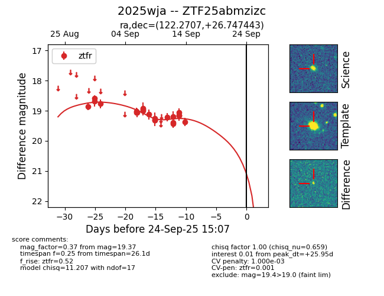
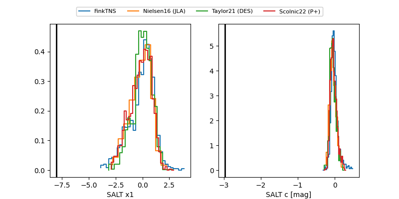

FINK: ZTF25abmzizc
Lasair: ZTF25abmzizc
ALeRCE: ZTF25abmzizc
TNS: 2025wja
YSE: 2025wja
ZTF25abmzizc (ztf,fink)
2025wja (tns,yse)
equatorial (ra, dec) = (122.2707,+26.74744)
galactic (l, b) = (195.4529,+27.99234)


last ztfr=19.37
22 ztfr detections